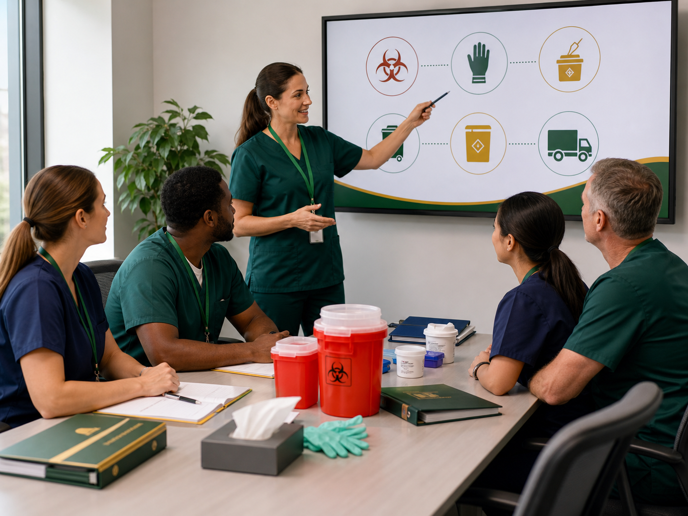
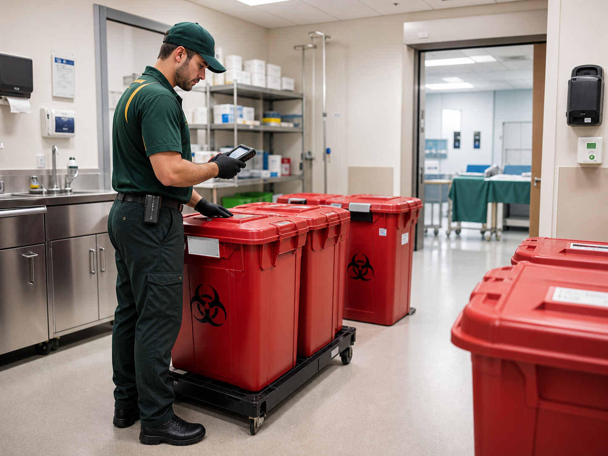
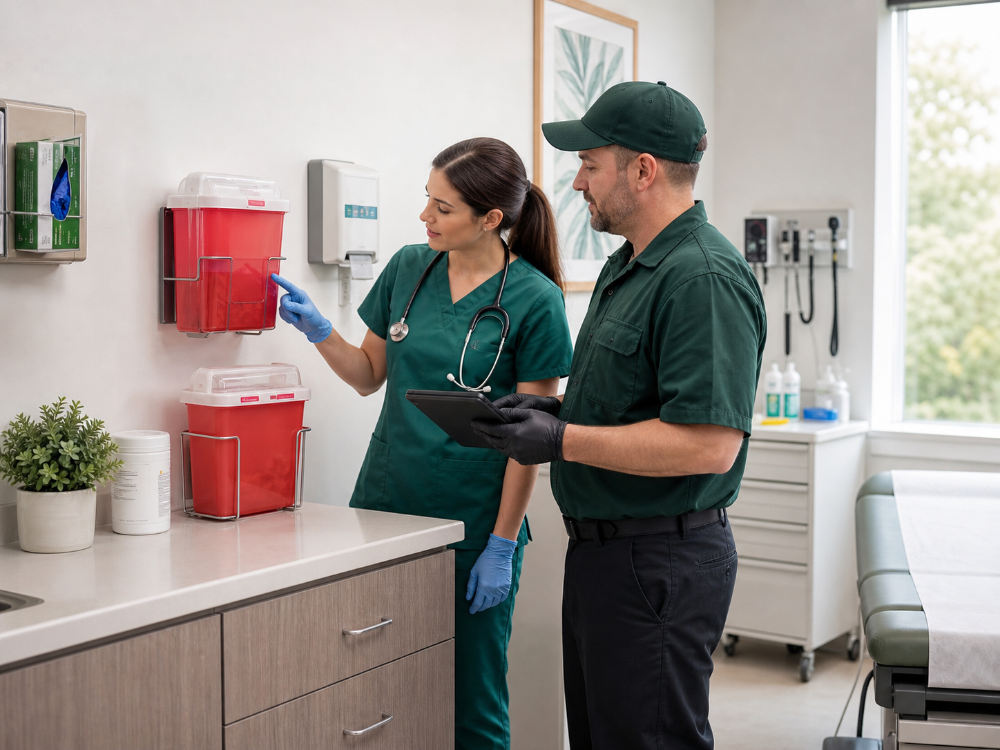
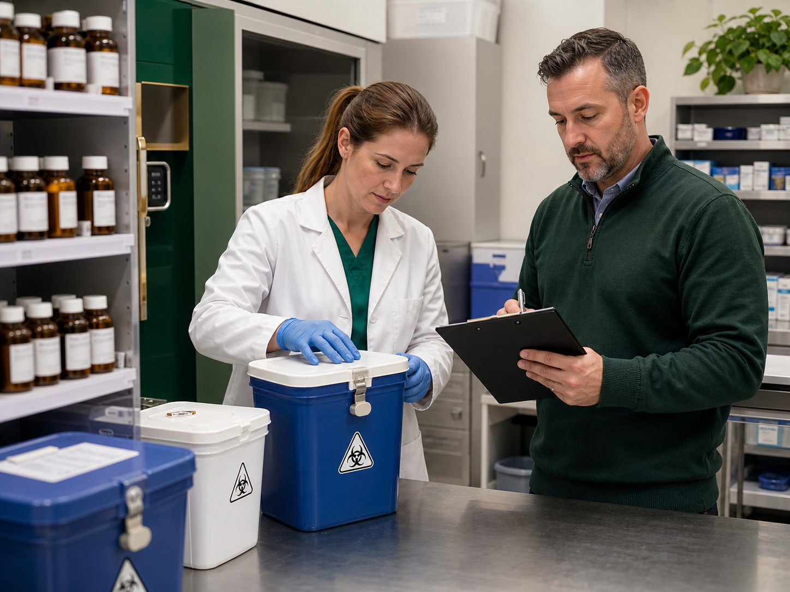
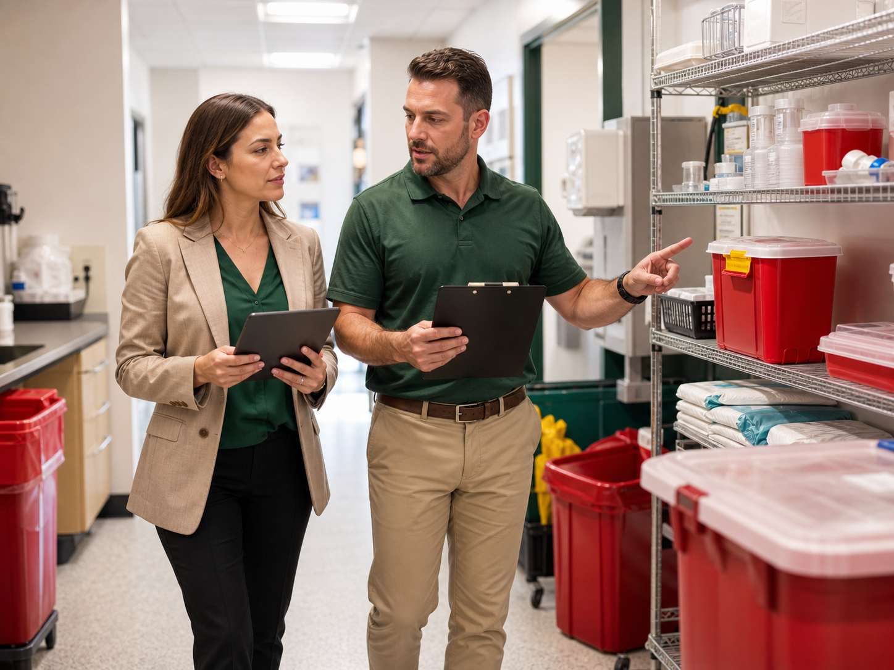

Role-based topics
Training can be planned around OSHA safety, Bloodborne Pathogens, HIPAA privacy and security, DOT transportation, and RCRA hazardous waste responsibilities.

Service
Online and on-site training support for OSHA, HIPAA, DOT, RCRA, and Bloodborne Pathogens topics tied to healthcare waste handling.
Service Review
Share the basics and the team will help review pickup, containers, records, training, and waste stream needs.
Online and on-site training support for OSHA, HIPAA, DOT, RCRA, and Bloodborne Pathogens topics tied to healthcare waste handling.
United Medical Waste builds practical programs around your facility type, waste streams, pickup cadence, training needs, and compliance records.
Training can be planned around OSHA safety, Bloodborne Pathogens, HIPAA privacy and security, DOT transportation, and RCRA hazardous waste responsibilities.
Training can support online learning, on-site sessions, custom facility topics, compliance audits, and recurring record updates.
Administrators can keep completion records, course topics, and follow-up items with inspection and internal review files.
Service Detail
Healthcare waste training should match employee roles. A front desk employee, clinical assistant, pharmacy technician, driver, and lab team may not need the same course mix.
United Medical Waste supports training topics tied to OSHA, Bloodborne Pathogens, HIPAA, DOT, and RCRA responsibilities, with online, on-site, and custom options where appropriate.
Topics can include hazard recognition, PPE, hazard communication, emergency response, and workplace safety practices.
Training can cover sharps handling, engineering controls, PPE, exposure response, and the OSHA Bloodborne Pathogens Standard.
Programs can support privacy and security awareness for teams that handle protected health information.
Training can address hazardous materials transportation awareness and hazardous waste management responsibilities.
Related Services

Regulated medical waste pickup for red bag waste, sharps, and related healthcare waste streams, with containers, transport records, and documentation support.
Learn more
Sharps container programs for needles, lancets, scalpel blades, and other puncture-capable waste generated in care settings.
Learn more
Pharmaceutical waste support for expired medications, hazardous and non-hazardous drug waste, trace chemotherapy waste, and medication-related records.
Learn moreOnline and on-site training support for OSHA, HIPAA, DOT, RCRA, and Bloodborne Pathogens topics tied to healthcare waste handling.
Learn more
Waste stream reviews that help facilities compare container setup, pickup frequency, segregation practices, and documentation workflows.
Learn morePeople Also Ask
Training needs depend on job role, waste streams, facility policy, and regulatory requirements. Common topics include OSHA safety, Bloodborne Pathogens, HIPAA awareness, DOT transportation topics, and RCRA hazardous waste training.
Some compliance training can be delivered online, while other topics may benefit from on-site review or facility-specific instruction. The format should match the employee role and the facility's training requirements.
Training should be reviewed when roles change, policies change, waste streams change, or regulations require refresher training. Facilities should keep completion records with their internal compliance files.
OSHA Bloodborne Pathogens training can apply when employees have occupational exposure to blood or other potentially infectious materials. Facilities should evaluate exposure risk by role and maintain required records.
Facilities should keep records that show who completed training, what topics were covered, when training occurred, and whether follow-up actions were needed.